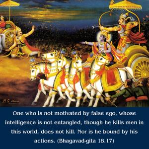
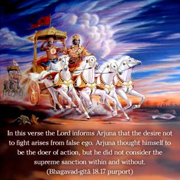
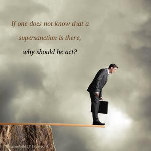
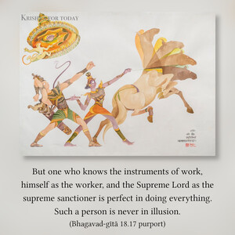
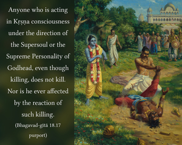

One who is not motivated by false ego, whose intelligence is not entangled, though he kills men in this world, does not kill. Nor is he bound by his actions.





In this verse the Lord informs Arjuna that the desire not to fight arises from false ego. Arjuna thought himself to be the doer of action, but he did not consider the supreme sanction within and without. If one does not know that a supersanction is there, why should he act? But one who knows the instruments of work, himself as the worker, and the Supreme Lord as the supreme sanctioner is perfect in doing everything. Such a person is never in illusion. Personal activity and responsibility arise from false ego and godlessness, or a lack of Kṛṣṇa consciousness. Anyone who is acting in Kṛṣṇa consciousness under the direction of the Supersoul or the Supreme Personality of Godhead, even though killing, does not kill. Nor is he ever affected by the reaction of such killing. When a soldier kills under the command of a superior officer, he is not subject to be judged. But if a soldier kills on his own personal account, then he is certainly judged by a court of law.